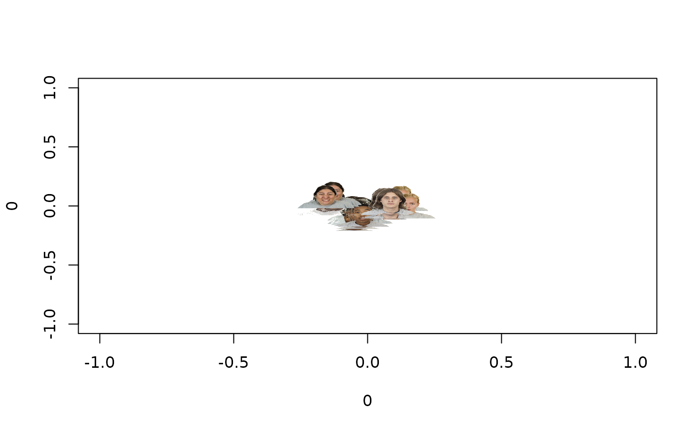

Get group list mean
get.group.list.mean.RdFrom a list of embeddings and a vector indicating to which group each embedding belongs, this function aligns embeddings within each group, then computes the mean embedding across members of the group.
Details
This function is useful for visualizing the mean embedding for different groups without having to recompute it from scratch. Note that the average of the aligned embeddings returned by this function will necessarily be the same as what is found if the embeddings are computed from scratch from the same participants.
Examples
repdist <- get.rep.dist(cfd_embeddings) #Representational distances
hc <- hclust(as.dist(repdist), method = "ward.D") #Cluster tree
clusts <- cutree(hc, 4) #Cut into 4 clusters
mn.by.clust <- get.group.list.mean(cfd_embeddings, clusts)
plot_pics(mn.by.clust[[1]], cfd_pics)
